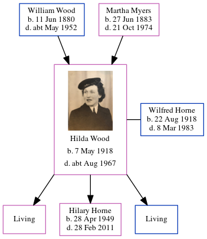

Hilda Horne (née Wood) 1918 - c1967
[ Home ] | [ Calendar ] | [ Surnames Index ] | [ Errors ] | [ Family History ]A confectioner's shop assistant and the child of William Wood (a plasterer) and Martha Myers, Hilda Wood, the wife of Wilfred George Horne (the uncle of Nigel Horne), was born in Tynemouth, Tyne and Wear, England on 7 May 19181,2,3 and married Wilfred (with whom she had 3 children: Gillian C, Hilary Ann and Adrian Keith, along with 2 surviving children) at St Peter's Church, North Shields, Tyne and Wear, England around Aug 19424 (Jul/Aug/Sep). On 29 Sept 1939, she was living at 2 Langley Road in Tynemouth1.
She died c. Aug 1967 in Tynemouth3.
Parents
- William Henry was born on 11 Jun 1880
- Martha Sarah Nicholson was born on 27 Jun 1883
Children
- Hilary Ann was born on 28 Apr 1949
Citations
- 1939 Register - Findmypast (was recorded at this address)
- England & Wales births 1837-2006 - Findmypast
- England & Wales deaths 1837-2007 - Findmypast
- England & Wales Marriages 1837-2005 - Findmypast
Media
Marriage of Wilfred George Horne to Hilda Wood

Hilda Wood
England & Wales marriages 1837-2008 - BMD/M/1942/3/AZ/000661/081
England & Wales marriages 1837-2008 - BMD/M/1942/3/AZ/001548/147
England & Wales births 1837-2006 - BMD/B/1918/2/AZ/001393/083
England & Wales deaths 1837-2007 - BMD/D/1967/3/AZ/000409/132
1939 Register - TNA/R39/2949/2949G/010/26
Family Tree
Map
Generated by ged2site. Last updated on Jul 3, 2024